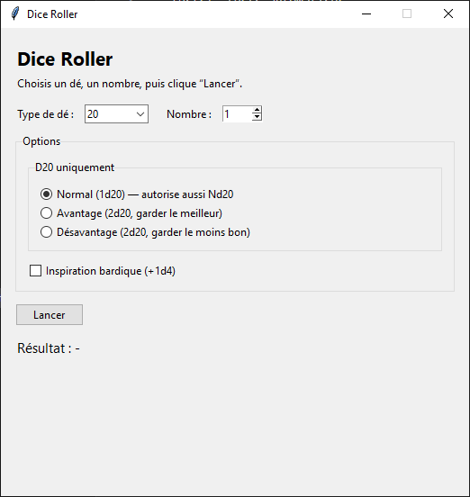

Resume
Ce projet sert de support d'entrainement pour consolider la separation des responsabilites, la qualite du code et la documentation d'usage.
Python
OOP
Tests
Documentation
Projet detail
Mini-projet Python utilise pour travailler structure, qualite de code et demonstration reproductible.
Ce projet sert de support d'entrainement pour consolider la separation des responsabilites, la qualite du code et la documentation d'usage.
Statut: en cours de consolidation.
Pourquoi ce projet existe et ce qu'il demontre.
Perimetre actuel et axes d'amelioration.
Commandes type de verification.
python -m venv .venv
.venv\Scripts\activate
pip install -r requirements.txt
pytest -qOrganisation cible du code et des tests.
L'objectif est de garder une structure qui separe clairement la logique metier, l'interface et les tests.
Dice_Roller_Python/
src/
dice_roller/
core.py
cli.py
tests/
test_core.py
README.mdUn visuel principal pour illustrer la demonstration.

Acces rapide aux ressources projet.